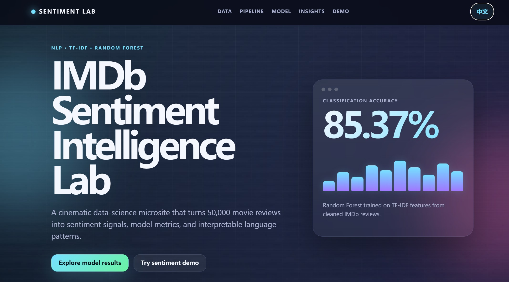
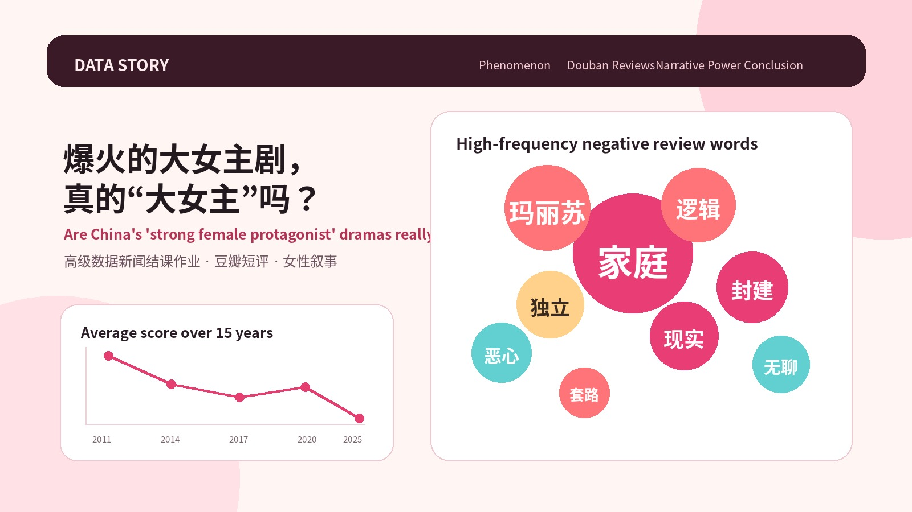
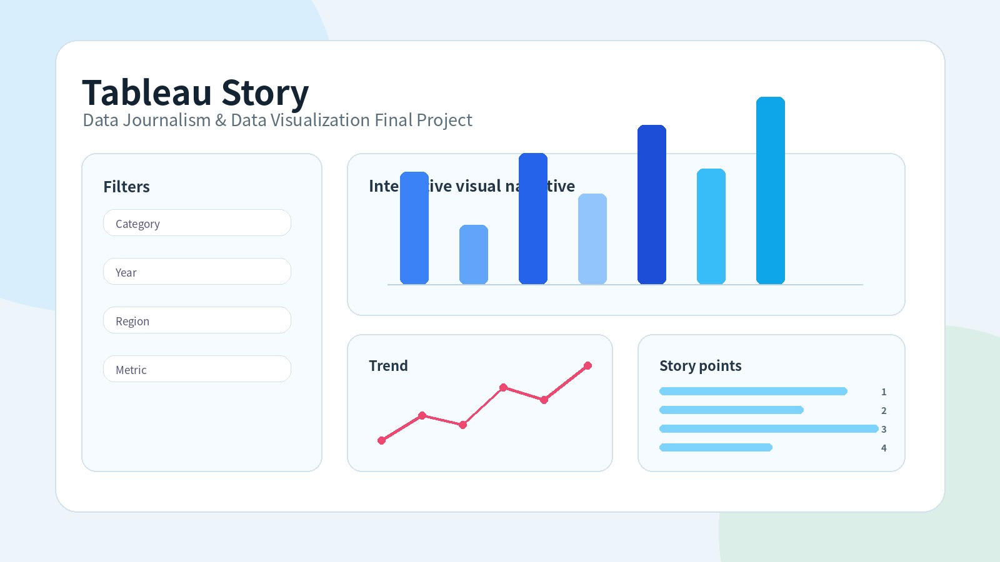
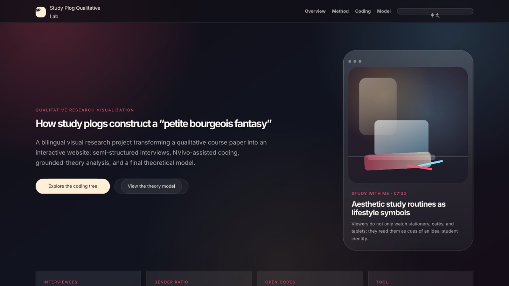
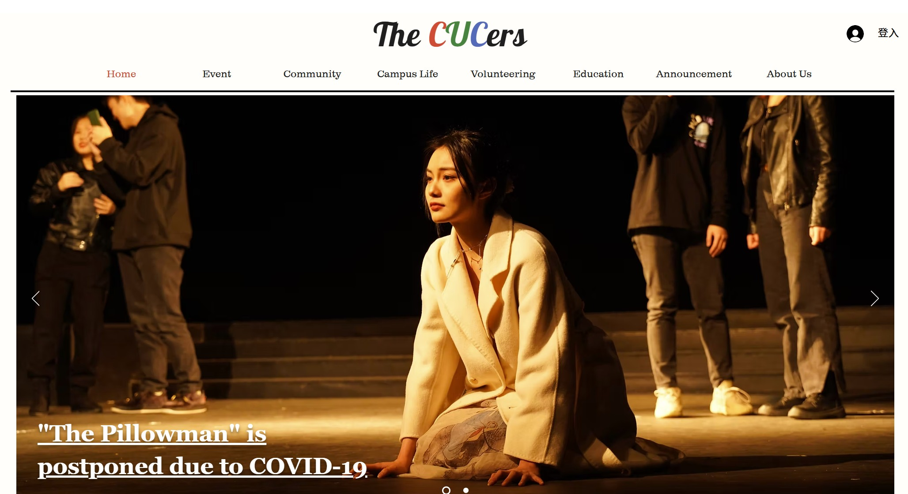

L — LAB
Lab
A working shelf of course projects, data stories, research pages, and visual experiments. Each piece shows one tool or method I have actually used.

01
IMDb Sentiment Lab
A data science course project that uses language models and NLP methods to analyze movie review sentiment.
Python · NLP · GitHub Pages
02
Are Hit Female-Led Dramas Really Female-Led?
An advanced data journalism project looking at whether popular “big heroine” dramas truly give women narrative power.
Data journalism · Web story
03
Data Journalism & Visualization Final Story
A Tableau-based final project that turns a data story into an interactive visual narrative.
Tableau · Visual storytelling
04
Study Plog Qualitative Lab
A qualitative methods paper rebuilt as a research page, showing interview design, NVivo coding, and theory building.
NVivo · Qualitative research
05
The Cucers
A convergent media reporting project built as a Wix site, combining topic planning, web editing, and visual presentation.
Wix · Convergent reporting